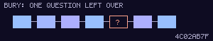
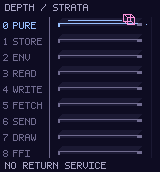
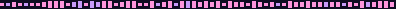

DEPARTMENT OF ALREADY HAPPENED / desk 00v0.3.0 · 2026-11-26

Nothing runs.
A programming language. An unusually permanent filing system.
Install & buryOpen the manualRead the spec
Please keep all limbs inside the current stratum.
Complaints hatch
You were promised a running program. Understandable.
This desk issues traces. For running, please consult a different universe. If you already typed nether run, your receipt is exit code 64.
No complaint was sent. This hatch is decorative bureaucracy; the ledger does not accept revisions anyway.
Read this first
A Nether C program is never executed.
It is buried. Burial evaluates the program as far as the world permits, then stops. What remains is a trace: an immutable, content-addressed record of everything computed, plus the holes where the program asked the world a question nobody has answered yet.
Answering a hole is a separate act called exhumation. Somebody chooses when and what to grant. Exhumation emits a new trace and never touches the old one.
Nothing in the ledger is ever revised.
That is the entire language. Everything after this is consequence.
Install & bury
Take a verified prebuilt v0.3.0 archive (Linux
x86_64, macOS arm64/x86_64) and
SHA256SUMS from Releases, or
build from source:
git clone https://github.com/oddurs/nether-c
cd nether-c
cargo build --release --locked --bin netherThen write a program and bury it:
// hello.nc — there is no main; there is a demand.
U0 greet()
{
"Hello from the nether\n"; // deposited, not printed
}
demand greet();$ nether bury hello.nc
buried hello.nc → efed9b2a depth 0 holes 0 4 nodes
$ nether lamp efed9b2a
Hello from the netherTHIS IS THE POINT, NOT THE PRICE
Burial printed nothing. A bare string leaves a deposit in the ledger, not a
line on your terminal; reading it takes a lamp. Two commands,
every time, starting thirty seconds into your first program.
What that buys: a Nether C program holds no capability that reaches a terminal or a log. Not behind a flag, not discouraged — absent. There is no code path from a buried program to stdout, so there is no accidental debug line and no secret leaked at three in the morning by a branch nobody has read since 2021. You cannot get that by being careful. You get it by not having the door (§90.1).
Holes, exhumation & replay

When burial reaches a question only the world can answer, it stops and leaves
a hole in the trace with all its arguments already buried.
read(concat(dir, name)) does not leave a hole containing
concat; it leaves a hole holding the finished path.
$ nether bury build.nc
buried build.nc → 76c4b655 depth 3 holes 1 4 nodes
hole ① read("main.nc") stratum 3 disk
$ nether exhume 76c4b655 --grant disk --root .
① read("main.nc") → 29 bytes 6940fecb
sealed 76c4b655 + 6940fecb → bb9ed429 depth 3 holes 0
$ nether exhume bb9ed429 --replay
identical.Notice two things. First, the cairn changed: answering hole ① emitted
bb9ed429 and left 76c4b655 intact. Second,
--replay holds no capabilities at all. A trace that
fetched from disk or the network replays offline because every answer was
recorded as a witness
(§6.7).
- You do not make a value. You find it.Every value lives at its content address (its cairn). Two burials that compute the same value write the same bytes to the same place without agreeing first — §7.2.
- The world's answer is written down before you get it.Not afterwards. Before. A witness recorded after a value returns can be lost, and a ledger with a gap supports nothing — §1.4.
- A refusal is an answer. A mistake is not.A missing file or bad
bytes are things the world said, so they are values that replay.
Calling
muston a refusal is a bug and stops burial; there is no catch, because a mistake you can catch is a mistake you will ignore — §9.9.
The nine strata

Every value carries a depth. Depth composes by
max: a thing built from parts is exactly as deep as its deepest
part.
0 is pure. Arithmetic and data. No world at all. Pure code does not survive burial, because there is nothing left of it but its answer.
1 reads the ledger. 2 reads an environment you froze in advance. 3 reads the disk. 4 writes it. 5 reads the network. 6 writes it.
7 is entropy — the deepest recordable sin. Drawn bytes must be written down because source alone cannot re-derive them; replay returns the same bytes, never fresh ones (§9.7).
8 is foreign code, whose history the ledger cannot keep. A trace that reaches 8 is marked, permanently, and everything downstream of it is marked too. It may never again claim to be replayable.
Stratum 8 exists because a language that cannot call C cannot be adopted, and
sits at the bottom because it breaks replay rather than deepening it. It is the
weakest part of the design, and
§90.2 says
so. No step ever lowers a depth; there is no ascend
(§1.2).
The Orpheus rule

Depth never decreases. So how does anything ever come back up?
You carry the record, not the thing. seal gives you a
cairn — a content address — and a cairn is always at
depth 0, because a name is pure no matter what it names. shade
gives you the value itself, opaque. You may store it, seal it, compare it, pass
it on. You may not look inside it.
Shade<Bytes> reply = descend net { shade must(get("https://example.invalid/index.json")) };
Cairn witness = seal reply; // legal: Cairn@0
I64 n = len(look(reply)); // not from up here you don't$ nether bury stamp.nc
error: cannot look at a shade from stratum 5 at depth 0
--> stamp.nc:14:21
|
14 | I64 n = len(look(reply));
| ^^^^^^^^^^^ this shade came from `get` at stratum 5
|
= the value is here, but you are not. Wrap the look in `descend net { … }`.YOU MAY CARRY A SHADE UP OUT OF ANY STRATUM.
YOU MAY ONLY LOOK AT IT BY GOING BACK DOWN.
One depth comparison, checked locally. The diagnostic names both strata and
the exact descend that resolves it. Orpheus could have kept her
(§1.6;
rejected forms in
§90.2).
The six rites
| Rite | What it does |
|---|---|
bury | evaluate as far as the world allows; emit a trace |
exhume | grant a stratum, answer holes, emit a deeper trace |
lamp | carry light down: render a value, or walk its provenance |
cairn | name a thing by its content; check that a name still holds |
strata | which stratum this reached, and the line that took it there |
graft | substitute a subtrace and re-bury only what changed |
Every rite accepts --help and --json
(§8.1);
nether lamp <cairn> --at <byte> inspects a byte offset
directly for editors
(§8.4.1).
THERE IS NO NETHER RUN
It exits 64 and tells you what to use instead. It is frozen in §8.0 alongside §7.1 and §7.3.1 so it is a rule and not a joke:
$ nether run hello.nc
nether: there is no `run`.
A Nether C program is not executed. It is buried — evaluated as far as the
world allows — and what remains is a trace and the holes the world still
owes an answer to.
[...]
Tools, proofs & status
- The Necropolis (web/necropolis/):
local WASM trace browser with no server and no world capabilities. Build and
serve it with
scripts/task wasm && scripts/task serveand open/web/necropolis/. - Vim and Neovim (tools/vim/nether.vim):
stateless editor adapter over
nether lamp <cairn> --at <byte>(§8.4.1). Bind a trace with:NetherTrace <cairn>, then pressKfor depth and type,gdto jump to thedescendorigin, andgpfor backward provenance. - Proof kernel and differential fuzzing (proof/): in-tree LCF proof kernel with zero external dependencies proving depth-lattice soundness, Orpheus premise sufficiency and necessity, residual staging equivalence, and canonical encoding injectivity, paired with 10,000,000 differential fuzz programs (§90.7).
- Security and reproducible builds: seven trust boundaries
and known gaps in
SECURITY.md
(
forbid(unsafe_code)outsidenether-foreignandnether-wasm), byte-identical release binaries checked on a second runner (reproducible builds), and the release compatibility contract (§0.6.1). - The decay ceiling (
.decay-ceiling): the build fails if the line count ofcrates/grows. Lowering the ceiling is an ordinary commit; raising it requires editing the file and justifying it in public. Below, things only decay.
Where it actually is
Status is never hand-written here — prose rots, and a GIF banner does
not even change colour when it stops being true. Both blocks below are baked
from cairn/items/, and the build fails if they drift.
depth 7 of 9 17 holes still owed
1 The Codex buried
2 The Lamp buried
3 The Ledger buried
4 The Core Calculus buried
5 The Surface buried
6 The Rites buried
7 The World buried
8 The Necropolis still owed 4 holes
9 Self-Burial still owed 2 holes
Every stratum in §09 has a provider and every rite in §08 is built. A stratum-7 trace replays byte for byte; a stratum-8 trace refuses to claim it can. What remains is tracked below:
holes 17
hole 1 The trace graph browser stratum 0 necropolis
hole 2 Provenance walk stratum 0 necropolis
hole 3 Proof: a stranger explains a hole stratum 0 necropolis
hole 4 The playground editor stratum 0 necropolis
hole 5 A pilot: build something real with it stratum 4 after
hole 6 Benchmark burial, and fail the build when… stratum 0 quickening
hole 7 Profile a real burial and say where the t… stratum 0 quickening
hole 8 Measure a year of a real store stratum 4 ossuary
... and 9 more, in the roadmap
Manual & specification
The manual answers what do I type: ten short chapters from first burial to offline replay, with every command checked against the compiler on every build.
The specification answers what is the rule, written ahead of the compiler in spec/. Four sections carry the design:
| § | Section | What it carries |
|---|---|---|
| 00 | Overview | the argument, in two pages, and release guarantees |
| 01 | The strata | the nine strata, monotonicity and the Orpheus rule |
| 02 | The calculus of depth | eleven typing rules on one page |
| 06 | Burial, holes and replay | burial, holes, exhumation and offline replay |
See all twelve sections with computed depth bars, or open chapter 00 to start typing.
Who made this
Oddur Sigurdsson.
Written from scratch, with three deliberate exceptions.
Encoders, parsers, renderers and formats are written in-tree; cryptography and
Unicode tables are not. The whole tree holds three small crates
(blake3 and the Unicode identifier/normalisation tables, argued in
§90.2) and
zero build-time downloads. Everything else is short enough to inspect:
- the compiler, the ledger, the burial and the six rites
- the in-tree LCF proof kernel in proof/
- a GIF89a encoder, an LZW compressor and a PNG encoder
- the face this page is set in, drawn glyph by glyph, and the TrueType tables and WOFF container that ship it
- an HTTP/1.1 client, and the loader for the one stratum that calls out
- the markdown renderer that made this page
On the palette
Bruise and bloom. Indigo rooms, rose signals, and a little cold light where the world gets in. The nine strata move from periwinkle through violet to pink; their numbers carry the meaning, even without colour.
- VOID
- The room itself
- SEDIMENT
- Panels and shelves
- GHOST
- Things worth reading
- BLOOM
- Titles and signals
- AFTERIMAGE
- Paths elsewhere
- ECTOPLASM
- A favourable answer
Lighting the lamp opens a second palette composed for rose porcelain, lavender paper and plum ink — never a raw inversion. Even the GIFs switch ink. One file, site/design.py, feeds CSS, graphics and depth labels, with contrast checked in both modes. The afterlife has paperwork; it need not have eyestrain.
That is a claim about what the code is made of, which is checkable. It is deliberately not a claim about how it came to be written, which would not be.
With a nod to Terry A. Davis (in memoriam).